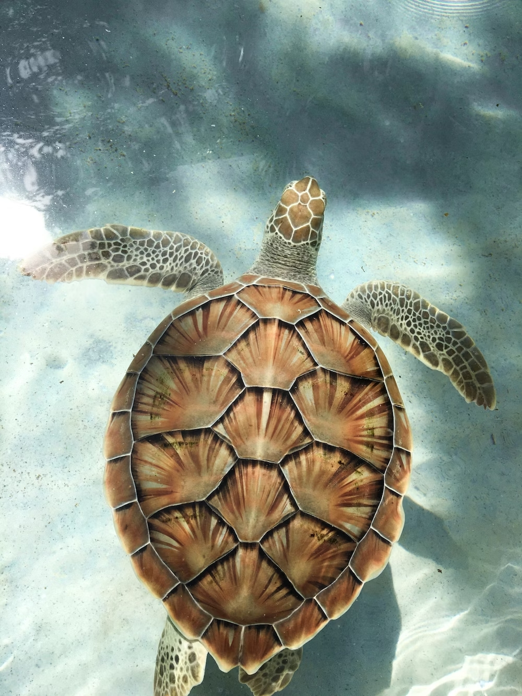
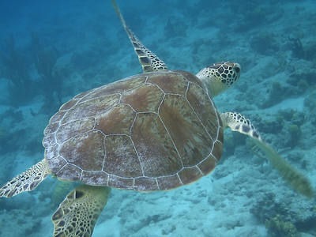
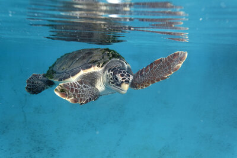

Más información
Nuestra fundación es la primera en tener el objetivo de proteger todas las especies de tortuga marina en peligro de extinción:
Tortuga carey
(en peligro crítico)
Son animales migratorios y viajan miles de kilómetros desde hábitats muy lejanos

Tortuga bastarda
(en peligro)
Mide hasta 90cm y pesa hasta 45kg
Tortuga verde
(en peligro)
Los ejemplares más grandes de esta tortuga llegan a los 400kg
Tortuga laúd
(vulnerable)
Es la especie de tortuga más grande del mundo

Tortuga boba
(vulnerable)
Se le llama así debido a la facilidad con la que los pescadores la capturaban flotando en la superficie

Tortuga olivácea
(vulnerable)
Es la especie más pequeña de tortugas marinas